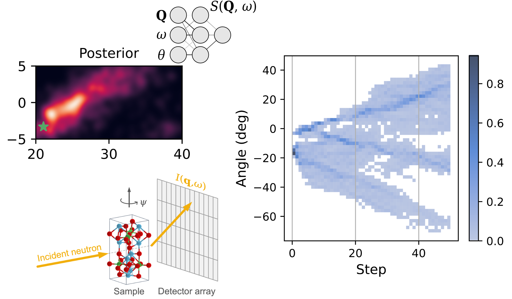

Research Areas
We combine machine learning, computational physics, and real-world scattering experiments to push the boundaries of materials science.
Materials Prediction & Discovery
We develop AI-based models that accelerate the prediction and discovery of novel materials.
Active Learning & Experimental Design
We combine ML surrogate models with Bayesian optimal experimental design to enhance experimental efficiency without compromising scientific insight.

Inverse Problems & Parameter Estimations
We leverage machine learning techniques to tackle challenging inverse problems and extract meaningful information from physical experiments such as X-ray and neutron scattering.
AI Agents for Materials Characterization
We are making exciting progress in developing AI agents for autonomous scientific discovery — stay tuned!